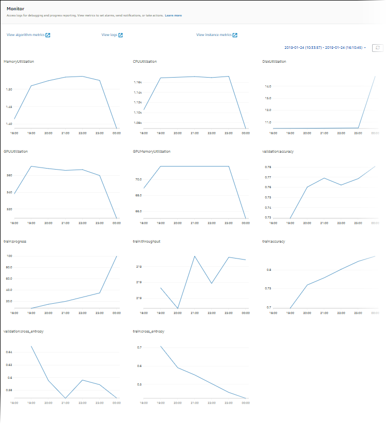
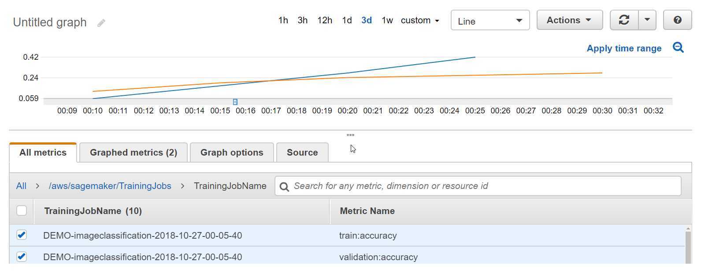

Monitor and Analyze Training Jobs Using Amazon CloudWatch Metrics
An Amazon SageMaker training job is an iterative process that teaches a model to make predictions by
presenting examples from a training dataset. Typically, a training algorithm computes
several metrics, such as training error and prediction accuracy. These metrics help diagnose
whether the model is learning well and will generalize well for making predictions on unseen
data. The training algorithm writes the values of these metrics to logs, which SageMaker monitors
and sends to Amazon CloudWatch in real time. To analyze the performance of your training job, you can
view graphs of these metrics in CloudWatch. When a training job has completed, you can also get a
list of the metric values that it computes in its final iteration by calling the DescribeTrainingJob
operation.
Note
Amazon CloudWatch supports high-resolution custom metrics, and its finest resolution is 1 second. However, the finer the resolution, the shorter the lifespan of the CloudWatch metrics. For the 1-second frequency resolution, the CloudWatch metrics are available for 3 hours. For more information about the resolution and the lifespan of the CloudWatch metrics, see GetMetricStatistics in the Amazon CloudWatch API Reference.
Tip
If you want to profile your training job with a finer resolution down to 100-millisecond (0.1 second) granularity and store the training metrics indefinitely in Amazon S3 for custom analysis at any time, consider using Amazon SageMaker Debugger. SageMaker Debugger provides built-in rules to automatically detect common training issues; it detects hardware resource utilization issues (such as CPU, GPU, and I/O bottlenecks) and non-converging model issues (such as overfit, vanishing gradients, and exploding tensors). SageMaker Debugger also provides visualizations through Studio and its profiling report. To explore the Debugger visualizations, see SageMaker Debugger Insights Dashboard Walkthrough, Debugger Profiling Report Walkthrough, and Analyze Data Using the SMDebug Client Library.
Topics
Defining Training Metrics
SageMaker automatically parses training job logs and sends training metrics to CloudWatch. By default, SageMaker sends system resource utilization metrics listed in SageMaker Jobs and Endpoint Metrics. If you want SageMaker to parse logs and send custom metrics from a training job of your own algorithm to CloudWatch, you need to specify metrics definitions by passing the name of metrics and regular expressions when you configure a SageMaker training job request.
You can specify the metrics that you want to track using the SageMaker console, the SageMaker Python SDK
If you are using your own algorithm, do the following:
-
Make sure that the algorithm writes the metrics that you want to capture to logs.
-
Define a regular expression that accurately searches the logs to capture the values of the metrics that you want to send to CloudWatch.
For example, suppose your algorithm emits the following metrics for training error and validation error:
Train_error=0.138318; Valid_error=0.324557;
If you want to monitor both of those metrics in CloudWatch, the dictionary for the metric definitions should look like the following example:
[ { "Name": "train:error", "Regex": "Train_error=(.*?);" }, { "Name": "validation:error", "Regex": "Valid_error=(.*?);" } ]
In the regex for the train:error metric defined in the preceding example,
the first part of the regex finds the exact text "Train_error=", and the expression
(.*?); captures any characters until the first semicolon character
appears. In this expression, the parenthesis tell the regex to capture what is inside
them, . means any character, * means zero or more, and
? means capture only until the first instance of the ;
character.
Define Metrics Using the SageMaker Python SDK
Define the metrics that you want to send to CloudWatch by specifying a list of metric
names and regular expressions as the metric_definitions argument when
you initialize an Estimator object. For example, if you want to monitor
both the train:error and validation:error metrics in CloudWatch,
your Estimator initialization would look like the following
example:
import sagemaker from sagemaker.estimator import Estimator estimator = Estimator( image_uri="your-own-image-uri", role=sagemaker.get_execution_role(), sagemaker_session=sagemaker.Session(), instance_count=1, instance_type='ml.c4.xlarge', metric_definitions=[ {'Name': 'train:error', 'Regex': 'Train_error=(.*?);'}, {'Name': 'validation:error', 'Regex': 'Valid_error=(.*?);'} ] )
For more information about training by using Amazon SageMaker Python SDK
Define Metrics Using the SageMaker Console
If you choose the Your own algorithm container in ECR option as your algorithm source in the SageMaker console when you create a training job, add the metric definitions in the Metrics section. The following screenshot shows how it should look after you add the example metric names and the corresponding regular expressions.
Define Metrics Using the Low-level SageMaker API
Define the metrics that you want to send to CloudWatch by specifying a list of metric
names and regular expressions in the MetricDefinitions field of the
AlgorithmSpecification input parameter that you pass to the
CreateTrainingJob operation. For example, if you want
to monitor both the train:error and validation:error
metrics in CloudWatch, your AlgorithmSpecification would look like the
following example:
"AlgorithmSpecification": { "TrainingImage":your-own-image-uri, "TrainingInputMode": "File", "MetricDefinitions" : [ { "Name": "train:error", "Regex": "Train_error=(.*?);" }, { "Name": "validation:error", "Regex": "Valid_error=(.*?);" } ] }
For more information about defining and running a training job by using the
low-level SageMaker API, see CreateTrainingJob.
Monitoring Training Job Metrics (CloudWatch Console)
You can monitor the metrics that a training job emits in real time in the CloudWatch console.
To monitor training job metrics (CloudWatch console)
-
Open the CloudWatch console at https://console.aws.amazon.com/cloudwatch
. -
Choose Metrics, then choose /aws/sagemaker/TrainingJobs.
-
Choose TrainingJobName.
-
On the All metrics tab, choose the names of the training metrics that you want to monitor.
-
On the Graphed metrics tab, configure the graph options. For more information about using CloudWatch graphs, see Graph Metrics in the Amazon CloudWatch User Guide.
Monitoring Training Job Metrics (SageMaker Console)
You can monitor the metrics that a training job emits in real time by using the SageMaker console.
To monitor training job metrics (SageMaker console)
-
Open the SageMaker console at https://console.aws.amazon.com/sagemaker
. -
Choose Training jobs, then choose the training job whose metrics you want to see.
-
Choose TrainingJobName.
-
In the Monitor section, you can review the graphs of instance utilization and algorithm metrics.

Example: Viewing a Training and Validation Curve
Typically, you split the data on which you train your model into training and validation datasets. You use the training set to train the model parameters that are used to make predictions on the training dataset. Then you test how well the model makes predictions by calculating predictions for the validation set. To analyze the performance of a training job, you commonly plot a training curve against a validation curve.
Viewing a graph that shows the accuracy for both the training and validation sets over time can help you to improve the performance of your model. For example, if training accuracy continues to increase over time, but, at some point, validation accuracy starts to decrease, you are likely overfitting your model. To address this, you can make adjustments to your model, such as increasing regularization.
For
this example, you can use the
Image-classification-full-training example in the
Example notebooks section of your SageMaker notebook instance. If
you don't have a SageMaker notebook instance, create one by following the instructions at
Step 1: Create an Amazon SageMaker Notebook Instance. If you
prefer, you can follow along with the End-to-End Multiclass Image Classification Example
To view training and validation error curves
-
Open the SageMaker console at https://console.aws.amazon.com/sagemaker
. -
Choose Notebooks, and then choose Notebook instances.
-
Choose the notebook instance that you want to use, and then choose Open.
-
On the dashboard for your notebook instance, choose SageMaker Examples.
-
Expand the Introduction to Amazon Algorithms section, and then choose Use next to Image-classification-fulltraining.ipynb.
-
Choose Create copy. SageMaker creates an editable copy of the Image-classification-fulltraining.ipynb notebook in your notebook instance.
-
Run all of the cells in the notebook up to the Inference section. You don't need to deploy an endpoint or get inference for this example.
-
After the training job starts, open the CloudWatch console at https://console.aws.amazon.com/cloudwatch
. -
Choose Metrics, then choose /aws/sagemaker/TrainingJobs.
-
Choose TrainingJobName.
-
On the All metrics tab, choose the train:accuracy and validation:accuracy metrics for the training job that you created in the notebook.
-
On the graph, choose an area that the metric's values to zoom in. You should see something like the following example.
